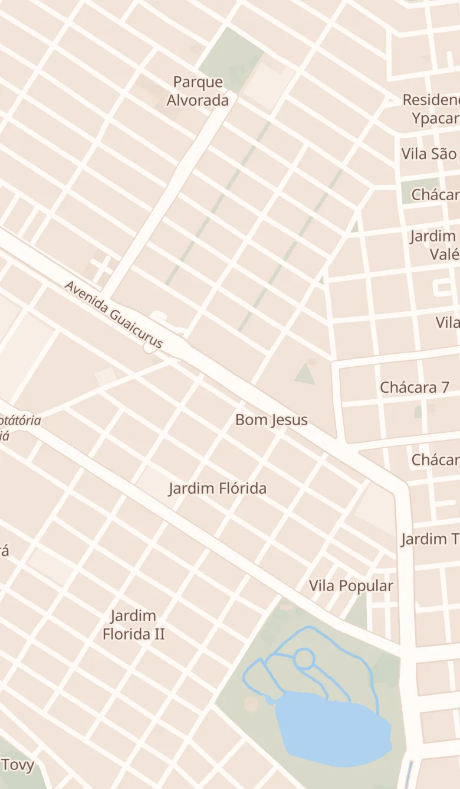
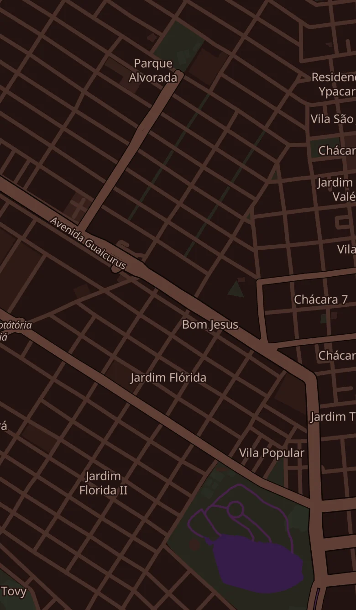

Uma página nova no NOS: o mapa cultural e dos movimentos de Dourados, com filtro por assunto. A primeira versão traz o Mapa da Capoeira inteiro: os 18 lugares de treino de 11 grupos que o COMAFRO Dourados levantou e confere em cada grupo. Depois entram as batalhas de rima, as feiras e o que mais o levantamento das organizações encontrar. Abaixo, três ideias para a página; as telas estão ao lado, de dia e à noite.
O mapa como cartaz da cidade.
Telas: celular, um lugar aberto (o Casulo), computador e o cartaz.
O mapa da hora.
Telas: celular (no céu do entardecer), a próxima de hoje aberta e computador.
O atlas da cidade.
Telas: celular, um lugar aberto (a Capoeira Baiana) e computador com a Feira dos Ipês aberta.


mapa-vivo.html, o mapa de verdade com os 18 lugares, aberto numa aba.A Agenda é urucum, as Notícias ipê-amarelo, o Comércio ipê-rosa; o Mapa, a erva-mate do tereré, o verde que todo mundo em Dourados reconhece. Como nas outras páginas, a cor aparece na porta do Início, nos ícones e no convite “Falta algum lugar?”; o resto é a terra e o céu de sempre.
data/mapa/capoeira.csv, com as colunas que ela já tem.Mostrar no Mapa · Grupo · Nome do Endereço · Endereço · Coordenadas · Nome do Responsável · Telefone de Contato · Instagram · Horários · Última revisão em · Fonte · Notas internas
Seg 19h-20h; Qua 19h-20h; Infantil: Qui 19h30-20h30. As outras duas leem o texto como ele está.